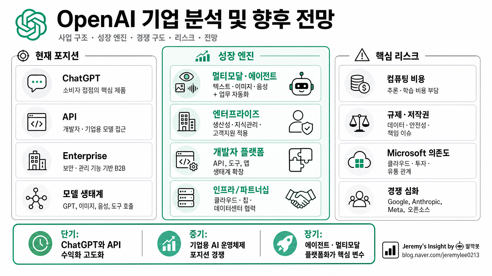

260504 OpenAI 기업 분석 및 향후 전망 보고서

핵심 결론
- 🚀 OpenAI는 앱·API·엔터프라이즈·인프라를 모두 장악하려는 AI 플랫폼 기업임
- 💰 성장성은 압도적이지만 컴퓨팅 비용과 자본 조달 부담도 같이 커지는 구조임
- ⚠️ 향후 승부는 모델 성능보다 유통·원가·규제·파트너십 통제력에서 갈릴 가능성 큼
한 줄 판단
OpenAI는 단순한 LLM 연구소가 아니라, ChatGPT를 소비자 앱으로, API를 개발자 플랫폼으로, Enterprise를 B2B 제품으로, Stargate·Microsoft·Oracle·SoftBank 협력을 인프라 레이어로 묶어 AI 시대의 운영체제를 노리는 기업이다. 다만 비상장 기업 특성상 실적 투명성은 낮고, 매출 성장보다 더 빠르게 비용과 기대치가 커질 위험이 있다.
현재 포지션
OpenAI의 핵심 자산은 세 가지다.
첫째, ChatGPT 브랜드다. 일반 소비자가 AI를 떠올릴 때 가장 먼저 생각하는 제품이 됐다. 검색, 문서 작성, 코딩, 이미지, 음성, 업무 보조까지 사용 범위가 넓어지며 AI의 기본 진입점 역할을 하고 있다.
둘째, API와 개발자 생태계다. 기업과 스타트업은 OpenAI 모델을 앱·서비스·업무 자동화에 붙인다. 이 구조는 OpenAI를 단순 앱 회사가 아니라 AI 인프라 공급자로 만든다.
셋째, Microsoft·클라우드·엔터프라이즈 유통망이다. Microsoft는 OpenAI의 핵심 투자자이자 Azure 기반 컴퓨팅 파트너다. 동시에 Copilot을 통해 OpenAI 기술을 기업 시장에 밀어 넣는 강력한 유통 채널이기도 하다.
사업 구조
| 영역 | 수익원 | 의미 |
|---|---|---|
| ChatGPT 구독 | Plus, Pro, Team 등 개인·소규모 유료 구독 | 소비자 앱 매출과 브랜드 지배력의 중심 |
| Enterprise | 대기업용 보안·관리·업무 통합 기능 | 마진과 유지율이 중요한 장기 성장 축 |
| API | 토큰 사용량 기반 과금 | 개발자·스타트업·SaaS 생태계 확장 축 |
| 멀티모달 제품 | 이미지, 음성, 영상, 에이전트 기능 | 사용 시간을 늘리고 고가 요금제를 정당화하는 요소 |
| 인프라 파트너십 | Microsoft, Oracle, SoftBank, Stargate 등 | 모델 학습·추론 비용을 감당하기 위한 공급망 전략 |
성장 엔진
1. ChatGPT의 슈퍼앱화
ChatGPT는 단순 챗봇에서 업무 비서, 코딩 보조, 검색 대체, 콘텐츠 제작 도구로 확장 중이다. 사용자가 “AI를 쓰는 첫 화면”을 장악하면, OpenAI는 검색·오피스·브라우저·업무툴 시장의 일부를 흡수할 수 있다.
핵심은 사용자 습관이다. 모델 성능이 경쟁사와 비슷해져도, 이미 매일 쓰는 인터페이스가 되면 전환 비용이 생긴다.
2. 엔터프라이즈 전환
OpenAI의 장기 가치는 개인 구독보다 기업 시장에서 커질 가능성이 높다. 기업은 보안, 데이터 통제, 관리자 기능, 감사 로그, 업무 시스템 연동을 요구한다. 이 요구를 충족하면 단가가 높고 이탈률이 낮은 B2B 매출을 만들 수 있다.
다만 엔터프라이즈 시장은 Microsoft, Google, Anthropic, Amazon, Palantir 등 강한 경쟁자가 많다. 기술만으로 이기기 어렵고, 영업·보안·컴플라이언스·구축 파트너 생태계가 중요하다.
3. 개발자 플랫폼
API는 OpenAI의 레버리지다. 개발자들이 OpenAI 모델 위에 제품을 만들수록, OpenAI는 AI 앱 경제의 세금처럼 토큰 사용료를 받을 수 있다.
하지만 API 시장은 가격 경쟁이 빠르다. 오픈소스 모델, Google Gemini, Anthropic Claude, xAI, Meta Llama 계열이 성능을 따라오면 추론 단가는 계속 내려갈 수 있다. OpenAI가 높은 마진을 유지하려면 성능·속도·안정성·툴링에서 확실한 차이를 유지해야 한다.
4. Stargate와 컴퓨팅 공급망
OpenAI의 가장 큰 병목은 모델 아이디어가 아니라 컴퓨팅이다. 초거대 모델 학습, 실시간 추론, 영상·음성·에이전트 제품은 모두 막대한 GPU·전력·데이터센터가 필요하다.
Stargate 같은 대형 인프라 프로젝트는 OpenAI가 AI 수요 폭증을 감당하기 위한 필수 전략이다. 동시에 이 전략은 막대한 고정비와 자본 조달 압박을 만든다. AI 수요가 기대보다 느리거나 가격이 빨리 하락하면, 인프라 투자는 강점이 아니라 부담이 될 수 있다.
경쟁 구도
| 경쟁자 | 강점 | OpenAI 관점 리스크 |
|---|---|---|
| Microsoft | Office, Windows, Azure, Copilot 유통망 | 파트너이면서 동시에 자체 AI 제품 경쟁자 |
| 검색, Android, Gemini, TPU, 데이터센터 | 모델·인프라·광고 유통을 모두 보유 | |
| Anthropic | 안전성 이미지, 엔터프라이즈 신뢰, Claude 품질 | B2B 시장에서 강력한 대체재 |
| Meta | 오픈소스 Llama 생태계, 막대한 자본 | API 가격 하락과 모델 범용화 압박 |
| xAI | 공격적 제품 속도와 X 데이터 접점 | 소비자 관심과 실시간 데이터 영역에서 경쟁 |
| 오픈소스 진영 | 낮은 비용, 온프레미스, 커스터마이징 | 기업이 벤더 종속을 피할 수 있음 |
숨은 리스크와 반대 의견
| 리스크 | 내용 | 영향 |
|---|---|---|
| 컴퓨팅 비용 | 매출이 커져도 추론·학습 비용이 더 빠르게 커질 수 있음 | 흑자 전환 지연, 자본 조달 반복 |
| Microsoft 의존도 | Azure·투자·유통에서 Microsoft 영향력이 큼 | 전략 독립성 제한 가능성 |
| 규제·저작권 | 학습 데이터, 생성물 책임, 개인정보, 선거·교육 규제가 확대될 수 있음 | 제품 출시 지연, 소송 비용 증가 |
| 경쟁에 따른 가격 하락 | 모델 성능 격차가 줄면 API 단가가 내려갈 가능성 큼 | 마진 압박 |
| 기업 도입 속도 착시 | PoC는 많지만 실제 전사 도입과 ROI 증명은 느릴 수 있음 | B2B 성장률 둔화 |
| 기대치 과열 | 비상장 고평가와 AI 낙관론이 이미 상당 부분 반영됨 | 투자자 실망 가능성 |
시나리오별 전망
| 시나리오 | 가능성 | 내용 |
|---|---|---|
| 낙관 | 중간 | ChatGPT가 AI 슈퍼앱이 되고 Enterprise/API가 고성장, Stargate 인프라가 원가 우위로 전환 |
| 기준 | 높음 | 매출은 빠르게 성장하지만 비용도 커져 수익성 검증이 계속 지연됨 |
| 비관 | 중간 | 모델 성능 격차 축소, 가격 경쟁, 규제·저작권 리스크, Microsoft와의 이해관계 충돌이 동시 발생 |
실무적 시사점
OpenAI를 볼 때 핵심 질문은 “모델이 제일 좋은가?”가 아니다. 더 중요한 질문은 다음 네 가지다.
- ChatGPT가 사용자의 기본 AI 인터페이스로 남을 수 있는가
- Enterprise 고객이 실제 업무 ROI를 확인하고 장기 계약으로 전환하는가
- 컴퓨팅 원가를 매출 성장보다 빠르게 낮출 수 있는가
- Microsoft와 협력하면서도 독립 플랫폼 지위를 유지할 수 있는가
최종 판단
OpenAI는 AI 시대의 가장 중요한 기업 중 하나다. 브랜드, 제품 속도, 모델 품질, 개발자 생태계, 파트너십을 모두 갖췄다. 그러나 “좋은 기업”과 “좋은 투자 대상”은 다르다. 현재 OpenAI의 리스크는 기술 실패보다 경제성 실패에 가깝다. 매출은 커질 가능성이 높지만, 컴퓨팅 비용·규제·경쟁·파트너 의존도를 이겨내고 지속 가능한 수익 구조를 증명해야 진짜 플랫폼 기업으로 남을 수 있다.
참고 자료
- CNBC, OpenAI expects revenue will triple to $12.7 billion this year, 2025-03-26
- OpenAI, Stargate 관련 공식 발표 및 인프라 파트너십 자료
- Microsoft, OpenAI partnership 관련 공식 블로그 자료
- OpenAI, Business/API 제품 및 가격 공개 자료
Jeremy's Insight by 🤖 딸깍봇 https://blog.naver.com/jeremylee0213